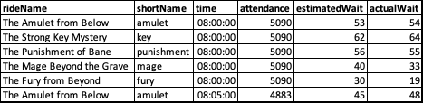
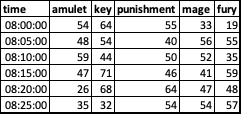
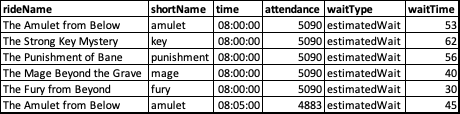

library(tidyverse)
library(data.table)Pivoting Data with tidyverse and data.table in R
R
R: tidyverse
R: data.table
pivot_wider/dcast and pivot_longer/melt all make sense with a bit of explaining.
Intro
Pivoting data can be a little scary sometimes, even if you know exactly what you want to do. But it doesn’t need to be. I’m hoping that by the end of this post, you’ll feel like the pivot pro you always knew you could be.

Getting Started
As usual, the first thing we want to do is load our libraries. We’ll be using pivot_wider and pivot_longer from tidyverse as well as the pipe operator, %>% from magrittr which is loaded through tidyverse. We’re also using dcast and melt from data.table as they are twins to pivot_wider and pivot_longer, respectively. While they are not identical, they perform the same functions are operate somewhat similarly.
Next we want to create our dummy data. I’ve been working with theme park data a lot recently, so I modeled the dummy data after that. The data description is as follows:
| variable | type | description |
|---|---|---|
| rideName | character | The full name of the ride |
| shortName | character | A shortened version of the name of the ride |
| time | ITime (from data.table) |
The time the data was recorded (every 5 minutes from 8am to 5pm) |
| attendance | double | The theme park attendance during the time recorded |
| estimatedWait | double | The estimated wait time in minutes |
| actualWait | double | The actual wait time in minutes |
set.seed(2022)
rideName <- rep(c("The Amulet from Below", "The Strong Key Mystery",
"The Punishment of Bane", "The Mage Beyond the Grave",
"The Fury from Beyond"), 108)
shortName <- rep(c("amulet", "key", "punishment", "mage", "fury"), 108)
time <- as.ITime(rep(seq(8*3600, 17*3600-1, by = 60*5), times = 1, each = 5))
attendance <- rep(round(rnorm(108, 5000, 100)), times = 1, each = 5)
estimatedWait <- round(rnorm(length(rideName), 50, 10))
actualWait <- round(rnorm(length(rideName), estimatedWait, 5))
dt <- data.table(rideName, shortName, time, attendance,
estimatedWait, actualWait)Once created, the data looks like this:
| rideName | shortName | time | attendance | estimatedWait | actualWait |
|---|---|---|---|---|---|
| The Amulet from Below | amulet | 08:00:00 | 5090 | 53 | 54 |
| The Strong Key Mystery | key | 08:00:00 | 5090 | 62 | 64 |
| The Punishment of Bane | punishment | 08:00:00 | 5090 | 56 | 55 |
| The Mage Beyond the Grave | mage | 08:00:00 | 5090 | 40 | 33 |
| The Fury from Beyond | fury | 08:00:00 | 5090 | 30 | 19 |
| The Amulet from Below | amulet | 08:05:00 | 4883 | 45 | 48 |
What are…
While I will show both pivot_wider/dcast and pivot_longer/melt in this post, I will default to the pivot_* term as it generally makes more sense on the surface.
pivot_wider and dcast
pivot_wider and dcast take data and reshapes it so that there are more columns and fewer rows than the input data. It allows you to specify a column as a unique identifier and use the values in one or more columns as new column names. The last column is the values that you want placed in the proper intersection between the identifier column value and each new column value.


In the example above, I’ve pivoted the actualWait using the time and shortName columns. We can see that the first five rows of values in actualWait have become the first row of values in the wider data. The last row with The Amulet from Below at 8:05 becomes the value for amulet in the second row of the wider data where the time is 8:05.
While pivot_wider and dcast perform the same function, they behave a little bit differently. pivot_wider uses three main arguments id_cols, names_from, and values_from. dcast, on the other hand, uses a formula argument in place of both id_cols and names_from and value.vars in place of values_from. The second big difference is that column names in pivot_wider don’t have to be in quotes. They can be, but they don’t have to be. On the other hand, only the formula in dcast can go without quotes, and in that case they must not have quotes while value.var must have quotes.
pivot_longer and melt
pivot_longer and melt take data and reshape it so that there are more rows and fewer columns than the input data. It allows you to specify specify columns that you want aggregated and the new column names for what was the column names and the values column.

In the example above, the estimatedWait and actualWait columns are consolidated into the waitType column where each row specifies if the corresponding waitTime column is an estimated or actual wait time.
Like the previous two, pivot_longer and melt have some differences, although these are smaller. pivot_longer uses three primary arguments, cols, names_to, and values_to which correspond to measure.vars, variable.name, and value.name, respectively, from melt. Again, the data.table version, melt requires quotes around each argument value while pivot_longer only requires quotes around names_to and values_to because cols is acting as a select statement.
Checking for Duplicates
One of the most important things to keep in mind before using pivot_wider or dcast is knowing if you should have duplicate data or not. If you shouldn’t have any duplicates, you’ll want to double check to make sure. To show you how to do this, I’ve added the first five rows of dt to the end of dt. If you were to try and pivot the resulting data.table, you each value cell would become a list rather than a single value and would look something like this:
| time | amulet | key | punishment | mage | fury |
|---|---|---|---|---|---|
| 08:00:00 | <dbl [2]> | <dbl [2]> | <dbl [2]> | <dbl [2]> | <dbl [2]> |
| 08:05:00 | <dbl [1]> | <dbl [1]> | <dbl [1]> | <dbl [1]> | <dbl [1]> |
| 08:10:00 | <dbl [1]> | <dbl [1]> | <dbl [1]> | <dbl [1]> | <dbl [1]> |
| 08:15:00 | <dbl [1]> | <dbl [1]> | <dbl [1]> | <dbl [1]> | <dbl [1]> |
| 08:20:00 | <dbl [1]> | <dbl [1]> | <dbl [1]> | <dbl [1]> | <dbl [1]> |
| 08:25:00 | <dbl [1]> | <dbl [1]> | <dbl [1]> | <dbl [1]> | <dbl [1]> |
That’s okay if you’re expecting multiple values, you’ll just need to remember use use values_fn for pivot_wider or fun.aggregate for dcast to make sure they are being handled appropriately. A common use-case would be something similar to pivot tables in Excel where you want to count each item. In that case, your function argument would be count.
The basic format to check for for duplicates is x[duplicated(x)]. However, duplicated() only returns TRUE for the second or more occurrence of an item in x. In order to check for all duplicates, we need to also check fromLast like this: x[duplicated(x) | duplicated(x), fromLast = TRUE]. Once you have identified your duplicate rows, it is up to you what to do. In some cases, you might be okay using unique(x) to get only unique items, or you might want to discard all duplicated items altogether with x[!duplicated(x) & !duplicated(x, fromLast = TRUE)].
# create duplicated data
dtDuplicated <- rbind(dt, dt[1:5])
# DuplicatedData.csv
dtDuplicated %>% pivot_wider(id_cols = !c(rideName, attendance, estimatedWait),
names_from = shortName,
values_from = actualWait)
# DuplicatedOnly.csv
# show all duplicated rows
dtDuplicated %>%
filter(!duplicated(dtDuplicated) & !duplicated(dtDuplicated, fromLast = TRUE)) %>%
arrange(rideName, time)
# DuplicatedDropped.csv
# drop duplicated rows
dtDuplicated %>%
unique()Pivot Wider
Wider with One Value Column
In this example, we want to know how long the actualWait is for each ride throughout the day with each recording time as a row, and each ride as a column.
In the pivot_wider, we want our new column names_from to be the shortName and our values_from actualWait. The tricky bit here is the id_cols argument. id_cols are columns whose values should uniquely identify each row in the data. We need to use it because the rideName and shortName columns are perfectly correlated, that is, for each row the value of both columns will always be the same. Any column that is not in the names_from or values_from argument will be part of the default id_cols argument. We can use the argument two ways; we can use a numeric vector to select the columns that we want to be used as identifiers, or we can specify columns that we do not want used as a character or column name vector. In the example below, I’ve included both methods. For the rest of the post, I’ll be using the second method.
As mentioned previously, the biggest difference for dcast is that it uses a formula instead of the id_cols and names_from arguments. The left hand side of the formula is the columns that you want to stay as columns to be used as the unique identifier for each row. The right hand side of the formula is the column whose values will be used as the new column names. Lastly, value.var defines the column with the desired values.
# pivot wider with one value column
dt %>% pivot_wider(id_cols = 2:3,
names_from = shortName,
values_from = actualWait)
dt %>% pivot_wider(id_cols = !c(rideName, attendance, estimatedWait),
names_from = shortName,
values_from = actualWait)# pivot wider with one value column
dt %>% dcast(time ~ shortName,
value.var = "actualWait")| time | amulet | key | punishment | mage | fury |
|---|---|---|---|---|---|
| 08:00:00 | 54 | 64 | 55 | 33 | 19 |
| 08:05:00 | 48 | 54 | 40 | 56 | 55 |
| 08:10:00 | 59 | 44 | 50 | 52 | 35 |
| 08:15:00 | 47 | 71 | 46 | 41 | 59 |
| 08:20:00 | 26 | 68 | 64 | 47 | 48 |
| 08:25:00 | 35 | 32 | 54 | 54 | 57 |
Wider with Two or More Value Columns
Wider data with more than one value column is very similar to one value column. The only changes you need to make in pivot_wider are changing your id_cols argument if using the column name method and adding the new column to the values_from argument. The only change needed in dcast is adding to the value.var argument. One important thing to note is that the column names will now be a combination of the names_from/right hand side argument and the values_from/value.var argument. The column name order in the value* argument determines the column order in the resulting data.
# pivot wider with two value columns
dt %>% pivot_wider(id_cols = !c(rideName, attendance),
names_from = shortName,
values_from = c(estimatedWait, actualWait))# pivot wider with two value columns
dt %>% dcast(time ~ shortName,
value.var = c("estimatedWait", "actualWait"))| time | estimatedWait_amulet | estimatedWait_key | estimatedWait_punishment | estimatedWait_mage | estimatedWait_fury | actualWait_amulet | actualWait_key | actualWait_punishment | actualWait_mage | actualWait_fury |
|---|---|---|---|---|---|---|---|---|---|---|
| 08:00:00 | 53 | 62 | 56 | 40 | 30 | 54 | 64 | 55 | 33 | 19 |
| 08:05:00 | 45 | 50 | 36 | 52 | 52 | 48 | 54 | 40 | 56 | 55 |
| 08:10:00 | 59 | 41 | 47 | 57 | 37 | 59 | 44 | 50 | 52 | 35 |
| 08:15:00 | 45 | 61 | 47 | 32 | 62 | 47 | 71 | 46 | 41 | 59 |
| 08:20:00 | 33 | 69 | 61 | 50 | 50 | 26 | 68 | 64 | 47 | 48 |
| 08:25:00 | 31 | 34 | 47 | 55 | 60 | 35 | 32 | 54 | 54 | 57 |
Pivot Wider Two or More ID Columns
Again, this is pretty similar to a “normal” wider operation. With pivot_wider you expand your id_cols to include the new columns, or, in my case, drop the attendance column so that it is now included. With dcast, you simply add the new column to the left hand side of the formula.
# pivot wider with two id columns
dt %>% pivot_wider(id_cols = !c(rideName, estimatedWait),
names_from = shortName,
values_from = actualWait)# pivot wider with two id columns
dt %>% dcast(time + attendance ~ shortName,
value.var = "actualWait")| time | attendance | amulet | key | punishment | mage | fury |
|---|---|---|---|---|---|---|
| 08:00:00 | 5090 | 54 | 64 | 55 | 33 | 19 |
| 08:05:00 | 4883 | 48 | 54 | 40 | 56 | 55 |
| 08:10:00 | 4910 | 59 | 44 | 50 | 52 | 35 |
| 08:15:00 | 4856 | 47 | 71 | 46 | 41 | 59 |
| 08:20:00 | 4967 | 26 | 68 | 64 | 47 | 48 |
| 08:25:00 | 4710 | 35 | 32 | 54 | 54 | 57 |
Pivot Longer
pivot_longer and melt are very similar. The largest differences are the argument names and where they require argument values to be in quotes. cols/measure.vars are the columns that you want to be aggregated into a single new column. This argument must be in quotes for melt, but does not have to be for pivot_longer and should be the names of existing columns. names_to/values_to is the name of the column that will say which column was used for that row and values_to/value.name are the corresponding values. The name for each of these new columns is up to you. I have decided on waitType to describe if it is an estimatedWait or actualWait and waitTime to hold the value.
I’ve saved a copy of the longer data as dtLonger so that we can explore pivot_wider and dcast a bit more.
# pivot longer
dt %>% pivot_longer(cols = c(estimatedWait, actualWait),
names_to = "waitType",
values_to = "waitTime") %>%
print() -> dtLonger# pivot longer
dt %>% melt(measure.vars = c("estimatedWait", "actualWait"),
variable.name = "waitType",
value.name = "waitTime") %>%
print() -> dtLonger| rideName | shortName | time | attendance | waitType | waitTime |
|---|---|---|---|---|---|
| The Amulet from Below | amulet | 08:00:00 | 5090 | estimatedWait | 53 |
| The Strong Key Mystery | key | 08:00:00 | 5090 | estimatedWait | 62 |
| The Punishment of Bane | punishment | 08:00:00 | 5090 | estimatedWait | 56 |
| The Mage Beyond the Grave | mage | 08:00:00 | 5090 | estimatedWait | 40 |
| The Fury from Beyond | fury | 08:00:00 | 5090 | estimatedWait | 30 |
| The Amulet from Below | amulet | 08:05:00 | 4883 | estimatedWait | 45 |
Pivot Wider (from Longer)
Pivot Wider with Two or More Name Columns
We want to take our new longer data and change it to wider data where we want to know how long the actualWait and estimatedWait are for each ride throughout the day with each recording time as a row, and each ride as a column and waitType and shortName.
For pivot_wider, we want our column names to use both the waitType and shortName and our values from waitTime. id_cols is then the remaining columns that we don’t want. With dcast, we want to add waitType and shortName to the right hand side of the formula so they are used as the column names, and time to the left hand side for the row identifiers. For both, values_from and value.var are our waitTime column.
Like when using multiple values in value_from/value.var, the new column names are all combinations of values in names_from or right hand side. The combinations will be given in the order the column names are specified.
# pivot wider with more than one right hand column
dtLonger %>% pivot_wider(id_cols = !c(rideName, attendance),
names_from = c(waitType, shortName),
values_from = waitTime)# pivot wider with more than one right hand column
dtLonger %>% dcast(time ~ waitType + shortName,
value.var = "waitTime")| time | estimatedWait_amulet | estimatedWait_key | estimatedWait_punishment | estimatedWait_mage | estimatedWait_fury | actualWait_amulet | actualWait_key | actualWait_punishment | actualWait_mage | actualWait_fury |
|---|---|---|---|---|---|---|---|---|---|---|
| 08:00:00 | 53 | 62 | 56 | 40 | 30 | 54 | 64 | 55 | 33 | 19 |
| 08:05:00 | 45 | 50 | 36 | 52 | 52 | 48 | 54 | 40 | 56 | 55 |
| 08:10:00 | 59 | 41 | 47 | 57 | 37 | 59 | 44 | 50 | 52 | 35 |
| 08:15:00 | 45 | 61 | 47 | 32 | 62 | 47 | 71 | 46 | 41 | 59 |
| 08:20:00 | 33 | 69 | 61 | 50 | 50 | 26 | 68 | 64 | 47 | 48 |
| 08:25:00 | 31 | 34 | 47 | 55 | 60 | 35 | 32 | 54 | 54 | 57 |
Pivot Wider with Mutiple ID and Name Columns
If you’ve been following along so far, the code below should make sense. We want to use time and attendance as the row identifiers and the estimatedWait and actualWait as the values for each ride.
# pivot wider with more than one left and right hand column
dtLonger %>% pivot_wider(id_cols = !rideName,
names_from = c(waitType, shortName),
values_from = waitTime)# pivot wider with more than one left and right hand column
dtLonger %>% dcast(time + attendance ~ waitType + shortName,
value.var = "waitTime")| time | attendance | estimatedWait_amulet | estimatedWait_key | estimatedWait_punishment | estimatedWait_mage | estimatedWait_fury | actualWait_amulet | actualWait_key | actualWait_punishment | actualWait_mage | actualWait_fury |
|---|---|---|---|---|---|---|---|---|---|---|---|
| 08:00:00 | 5090 | 53 | 62 | 56 | 40 | 30 | 54 | 64 | 55 | 33 | 19 |
| 08:05:00 | 4883 | 45 | 50 | 36 | 52 | 52 | 48 | 54 | 40 | 56 | 55 |
| 08:10:00 | 4910 | 59 | 41 | 47 | 57 | 37 | 59 | 44 | 50 | 52 | 35 |
| 08:15:00 | 4856 | 45 | 61 | 47 | 32 | 62 | 47 | 71 | 46 | 41 | 59 |
| 08:20:00 | 4967 | 33 | 69 | 61 | 50 | 50 | 26 | 68 | 64 | 47 | 48 |
| 08:25:00 | 4710 | 31 | 34 | 47 | 55 | 60 | 35 | 32 | 54 | 54 | 57 |
Wrapping Things Up
A quick benchmark
rbenchmark::benchmark(
"pivot_wider" = {
tmp <- dt %>% pivot_wider(id_cols = !c(rideName, attendance, estimatedWait),
names_from = shortName,
values_from = actualWait)
},
"dcast" = {
tmp <- dt %>% dcast(time ~ shortName,
value.var = "actualWait")
}, order = "user.self")
rbenchmark::benchmark(
"pivot_longer" = {
tmp <- dt %>% pivot_longer(cols = c(estimatedWait, actualWait),
names_to = "waitType",
values_to = "waitTime")
},
"melt" = {
tmp <- dt %>% melt(measure.vars = c("estimatedWait", "actualWait"),
variable.name = "waitType",
value.name = "waitTime")
}, order = "user.self")| test | replications | elapsed | relative | user.self | sys.self | user.child | sys.child |
|---|---|---|---|---|---|---|---|
dcast |
100 | 0.060 | 1.00 | 0.059 | 0.001 | 0 | 0 |
pivot_wider |
100 | 0.309 | 5.15 | 0.307 | 0.002 | 0 | 0 |
| test | replications | elapsed | relative | user.self | sys.self | user.child | sys.child |
|---|---|---|---|---|---|---|---|
melt |
100 | 0.005 | 1.0 | 0.005 | 0.000 | 0 | 0 |
pivot_longer |
100 | 0.152 | 30.4 | 0.149 | 0.003 | 0 | 0 |
data.table methods are faster than tidyverse and wider to longer is faster than longer to wider.
Conclusion
I’m hoping that by now you’re more comfortable with pivot_wider/dcast and pivot_longer/melt than you were before. Generally, before you begin reshaping data, you want to know what your resulting data should look like and if you’ll have any duplicate rows. From there, decide if you want to use tidyverse or data.table and then write your code.
All code used in this article is available here. If you want to see more from me, check out my GitHub or guslipkin.github.io. If you want to hear from me, I’m also on Twitter @guslipkin.